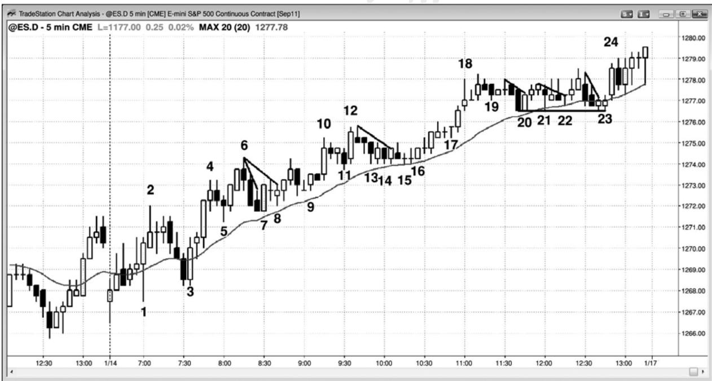
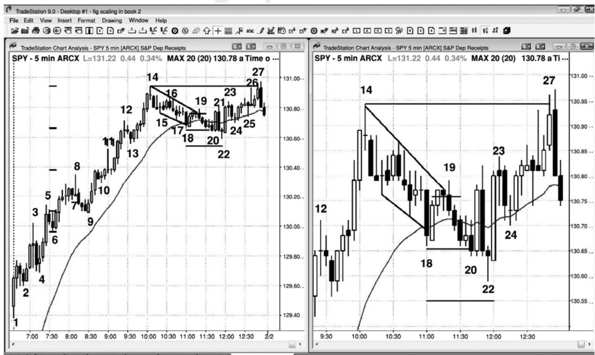
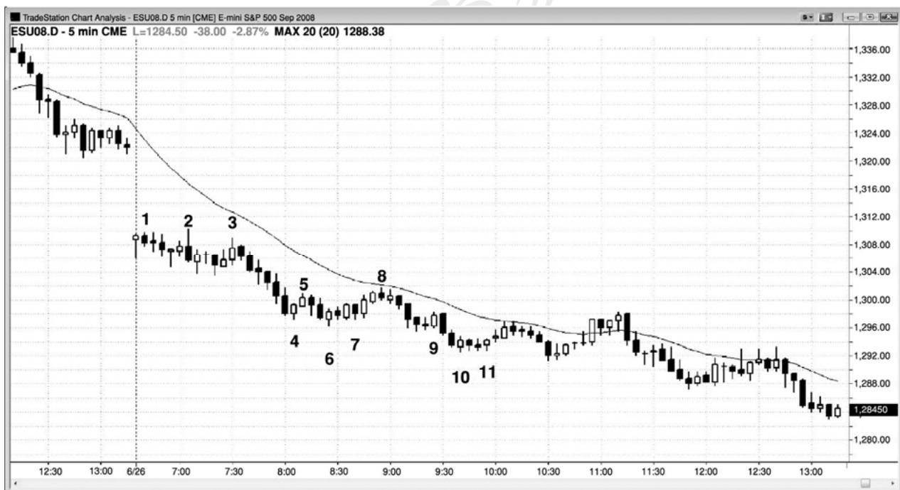
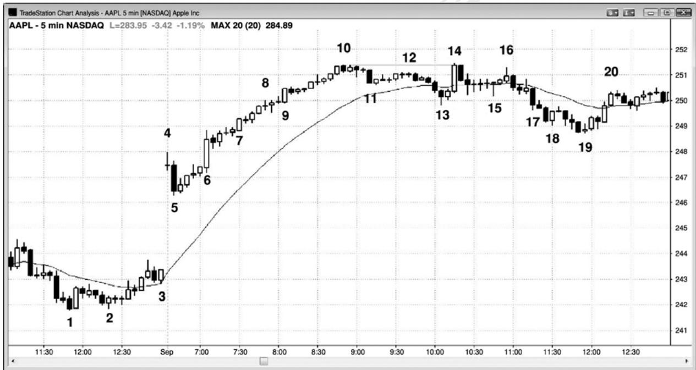
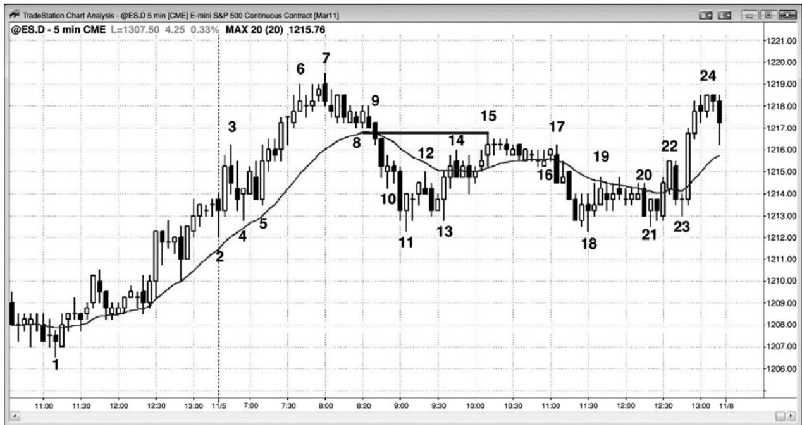
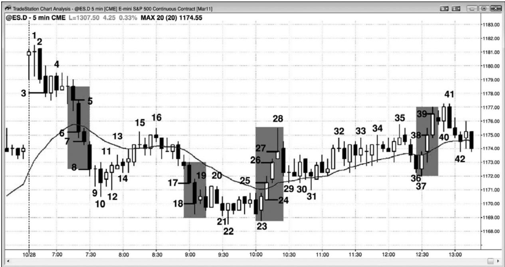
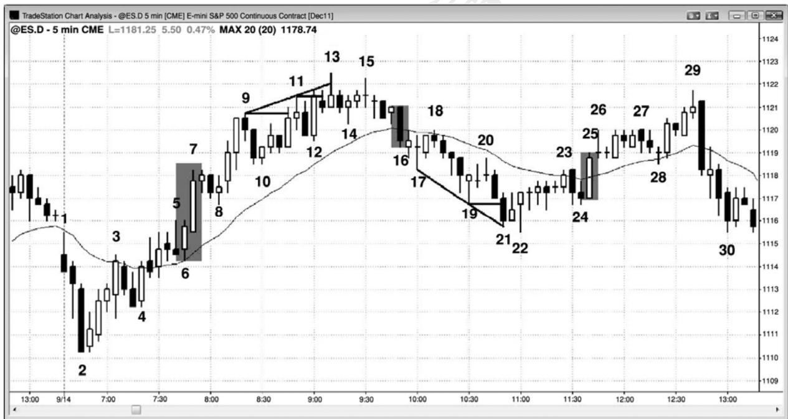
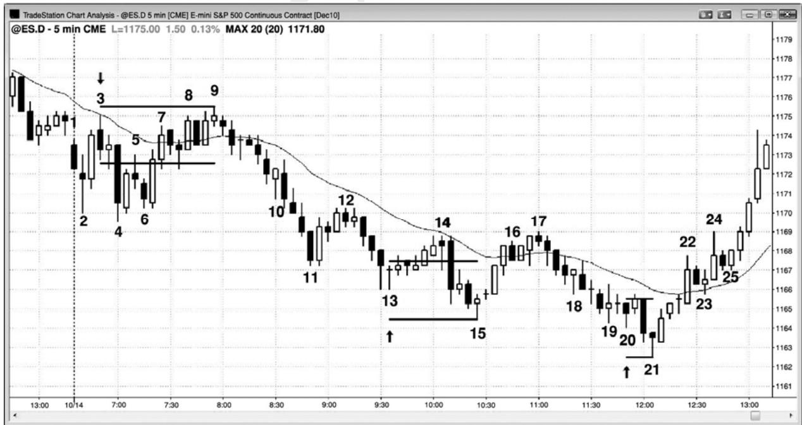

第31章 交易的逐步入场和逐步出场策略¶
第 31 章 交易的逐步入场和逐步出场策略
逐步加仓意思是说，你正在又一次进入曾经入场的一个头寸，逐步出场的意思是说，当你退出时，只退出部分头寸，并且准备在随后退出剩余头寸。与逐步入场策略相比，更多交易者愿意采用逐步出场策略；实际上，很多交易者经常逐步退出交易。举例说明，如果你退出部分头寸，作为刮头皮，然后退出剩余头寸，作为波段交易，那么你就是正在采用逐步出场策略。
逐步入场意味着你正在加仓。像共同基金这样的机构，不得不经常性地逐步加仓和减仓，因为他们每天都会收到新的资金和赎回请求。在回撤期间，当私人交易者在趋势方向入场时，他们常常采用逐步入场策略。当他们在交易区间的极点做反向交易，以及在使用平均成本法（dollar cost average）时，他们也常常采用逐步入场策略。在市场可能反转时逐步入场是非常冒险的；如果市场向不利方向运动，通常较好的做法就是离场，然后寻找二次入场。
当市场向不利方向运动，或者是向有利方向运动时，你都可以采用逐步入场策略。如果你在已经获利的情况下逐步入场，那么这也常常称作加大自己的头寸，或者推进自己的交易。举例说明，如果市场处于多头通道内，那么随着市场上涨，多头将会在每个回撤增加他们的头寸。同样地，在强多头尖峰中也是如此。当尖峰快速增长时，很多交易者会逐步快速加大他们的多头头寸。当交易者方程特别好时，强尖峰总会产生短暂的机会，有些交易者擅长在这些快速行情中推进他们的交易。每次附加买进通常是在更高价位，他们之前的所有入场都是可获利的。当市场正在上涨时，在多头通道内做空的空头，正在前一棒的高点上方逐步入场，随着价格走高而加仓。之前入场的每笔交易的亏损都在增长，但是，空头预期一旦市场反转，他们就会获得净利润。我有一位朋友，他是在电子迷你的通道中逐步入场逆势交易、预期市场反转的专家。他预期市场测试通道起点，他将在那里获利了结。举例说明，如果电子迷你近期的平均区间约为 10 到 15 点，今天已经形成一轮尖峰和通道多头趋势，包含几次上推，而且不是特别强，那么他就开始在最近的波段高点处使用限价单做空，只要每个入场架构至少比前一个高出 2 点，他就在通道内接下来的一两个新高处加大他的头寸。他的一到三次入场，每次大约交易 10 手合约。几年以前，我曾经与他聊过多次，当他做这些交易时，市场从未大幅超越他的第二个和第三个入场点，就会反转并向有利方向运动，所以在我们的谈话中止损从来都不是一个问题。然而，我认为止损肯定至少比他的最后入场点超出几点。根据我的交易数学，我认为他愿意为了自己的 30 手合约冒$5,000 到$10,000 的风险。我在这里讲这个故事，并不是推荐他的做法，因为极少有人拥有那样的交易技巧。不过，他是一个有趣的实例，专门使用特定类型的逐步入场策略，并且以此为生。
当市场向不利方向运动时，逐步入场的重要前提是你认为市场很快将向对你有利的方向运动，从而使你获利。除非你对大的行情非常自信，否则决不应该对正在亏损的头寸采取逐步入场策略，最好的情况是当你认为自己正在一轮强趋势中一个增长中的回撤内逐步入场，并且具有明确的总在场内方向时。大部分交易者从来不会加大正在亏损的头寸，相反地，他们会让自己被止损踢出，如果出现另一个信号，那么他们就准备重新入场。然而，很多交易者虽然感觉自己对于趋势或交易区间的底部或顶部从不确定，但是对于市场接近反转的时间却非常自信。那些交易者中有一些人选择反转交易，使用宽松的止损。有些人使用紧凑的止损，如果市场向不利方向运动，他们就止损退出，然后寻找另一个入场机会。逐步入场型交易者，一开始交易的头寸规模比较小，如果市场继续向不利方向运动，那么只要他们认为自己的预期仍然准确，他们就会增加自己的头寸。如果市场立即向他们的方向运动，那么很多人将通过推进自己的筹码来将头寸加至满仓。他们要么情愿在更好的价位逐步入场，要么情愿在更糟的价位逐步入场。举例说明，如果他们在一个大型交易区间底部的向上反转形态中买进，并且情愿在更低价位加仓，但是，如果市场立即向他们的方向运动，那么他们可能会在市场继续向交易区间顶部运动时在回撤加仓。有些交易者可能交易一半规模，在较低价位加上另一半，然后在向上反转时伺机在盈亏平衡点退出首次入场的一半，将另一半波段化，使用盈亏平衡止损。如果你正对一个亏损头寸逐步加仓，然后你认为大的行情已经改变，你的预期不再有效，那么你必须退出交易，接受亏损。即便市场开始向你的方向反转，如果你感觉自己最初的目标已经变得不现实，那么就不要坚持并希望之前的预期将再次变得有效。你必须一直交易眼前的市场，而不是你希望的市场，或者几棒之前的市场。市场在每个跳动都会变化，如果你最初的目标现在已经不现实，那么就寻找一个新的目标，并且在那里退出，即使那意味着你将接受亏损。举例说明，如果你在一个总在场内多头市场中逐步入场，然后它翻转成为总在场内空头状态，那么你应该离场，并且寻找做空架构，而不是希望总在场内多头市场会再回来。希望永远都不是持有头寸的可靠基础，因为市场的基础是数学，不是运气、公平、情绪、因果或宗教。
P285
“决不对亏损的头寸加仓。”那是华尔街上最基本的规则之一。不过，它具有误导作用，因为机构一直在那样做，而且它是很多可获得策略的一部分。那怎么可能呢？那是因为，这句格言指的是逆势交易，而机构正在逐步加仓的是顺势交易。每当某机构感觉市场已经涨得太多或跌得太多时，它就认为存在反向交易的价值。因为没有人能够一直准确地捕捉反转点，所以很多机构会在很多棒上分批入场。当他们早期入场的交易出现账面亏损时，他们不关心是否有某个入场信号形成。只要他们看到价值，并且要建立一个大型头寸，他们就努力在尽可能好的价位执行，无论它是高于还是低于他们的早期入场点。这类似于私人交易者所用的平均成本法（dollar cost averaging）。如果一位投资者有一些现金，希望买进股票，那么他可能在接下来的 10 个月中分批买进，每个月使用 10%的现金，而不管后来的入场点是否处于更低价位。平均成本法是一种成功的策略，常常需要投资者为正在亏损的头寸加仓。然而，这与在强空头尖峰底部买进，认为不久肯定出现反弹的交易者大相径庭。当市场又连续下跌两棒时，他买进更多，然后在更低价位再次买进，因为他试图降低自己的平均成本。不久，他就希望市场反弹至他的平均入场价位附近，于是他便可以在打平的情况下离场。他的头寸总是会变得非常大，以至于不得不决定在下一条空头趋势棒离场。那一棒通常是一波大型卖出高潮，他在离场时接受了巨大的亏损，比他最初希望从那笔多头刮头皮交易上获得的利润大很多倍，他是在市场底部离场，刚好在大型反弹之前。
对于交易的逐步入场和出场，有着坚实的数学基础，但是很多交易者采用这种策略，只是因为他们发现它有效，他们并不关心理由。职业交易者们一直在日线图和周线图上那样操作。这种方法也适用于日内交易者。对于你没有在一天中持续跟踪的股票，如果你正在做波段交易，而且你对于阅读价格行为颇有经验，自信地认为入场点位于波段起点附近，那么你就可以使用宽松的保护性止损，如果市场继续向不利方向运动，就伺机加仓。你的初始交易可能是正常头寸规模的一半或三分之一，当市场向不利方向运动时，你可以准备加仓一次或两次。
在总在场内市场（有一轮明确的趋势，至少在较高时间框架上有一轮明确的趋势）的正在增长的回撤中交易时，在交易区间极点做反向交易时，逐步入场通常是最佳策略。交易者 可以逐步入场： 易时，在
强多头尖峰之后的小幅回撤入场的多头头寸（回撤是小型逆势通道）。
强空头尖峰之后的小幅回撤入场的空头头寸。
当空头通道下降时的多头头寸，或者当多头通道上升时的空头头寸。
回撤进一步下跌（回撤是小型趋势，所以是在通道内）时的多头头寸，或者空头反弹上涨时的空头头寸。举例说明，如果形成一条陡峭的上升均线，那么多头将在市场向均线下方回撤时逐步入场多头头寸。
任意强趋势的回撤中的固定间隔处，以先前回撤的幅度和近期平均日区间为依据。
交易区间内的多头头寸或空头头寸。
突破期间的逆势头寸，前提是市场很可能向突破点回撤，比如在宽幅通道日中，在趋势型交易区间日中，或者在台阶形态中。
逐步入场或出场的方式有很多，原因是存在非常多的变量，包括：
你将要逐步加仓的次数。你可能加仓一次，也可能加仓多次。
头寸的规模。如果你容许在市场向不利方向运动时逐步加仓，那么要确保你的初始头寸足够小，以便使最终头寸的风险在正常容限之内。
在每个价位交易的股数。首次入场可能是 100 股，二次入场可能是 200 股，三次入场可能是500股，或其他数量。但是，大部分交易者每次加仓时都使用相同的股数。
不同入场的价位。步骤不必固定，也就是说你可以在首次入场点下方 20 美分处对多头头寸加仓，然后在首次入场点下方 30 美分、70 美分或其他价位再次加仓。另外，你可以在第一个反转信号入场，如果趋势继续，那么你可以在下一个反转信号加仓，也可能是在它后面一个反转信号入场。
风险。即你的保护性止损与平均入场价位之间的距离。
回报。即你的获得了结限价单与平均入场价位之间的距离。
胜率。永远不确定，随着风险、回报和平均入场价位而变化。举例说明，以 30 美分风险博取 30 美分利润时的胜率，大于以 20 美分风险博取 30 美分利润时的胜率，但是小于以40美分风险博取30美分利润时的胜率。
P286
逐步入场和出场涉及不确定性，不确定性是通道和交易区间固有的特性，其中双向交易正在发生。交易者打赌短期运动正在结束，一波较大的运动即将开始。甚至在交易区间中这也是正确的，比如交易者正在一条空头腿中逐步入场多头交易，认为较大的画面是交易区间，那条小型腿可能不会令交易区间演变为空头趋势。（回报、风险和胜率）几个变量的任意组合，只要胜率与潜在回报的乘积大于赔率与风险的乘积，就是一种有效的策略。你总是知道风险和潜在回报，因为当你设定保护性止损和获利了结限价单时，就确定了风险和潜在回报。你永远不会确切地知道胜率，但是你通常知道什么时间的胜率是 60%或更高；如果你不确定，那么就假定胜率是 50%。
每当逆势逐步入场时，作为一条基本规则，如果市场形成第二波对你不利的运动，那么就应该离场。也就是说，如果你正在捕捉一轮空头趋势的底部，市场形成一个低点 2 做空架构，特别是那个低点 2 架构位于均线附近，而且拥有一条空头信号棒，那么你应该退出自己的多头头寸，甚至应该考虑反转做空。如果你仍然认为市场即将见底，那么你可以开始在更低价位再次逐步入场。另外，在一天的最后一小时左右逆势逐步入场是比较冒险的，因为你常常会发现自己持有一个很大的亏损头寸，却不得不在收盘前平仓。时间对你不利。最后，在与任何强趋势相反的方向上逐步入场也是危险的。举例说明，如果你认为市场处于一轮强空头趋势中，那么你必须相信市场不久将会更低。如果你相信它不久将会更低，那么现在开始买进就是太早了。当趋势强劲时，你应该考虑的唯一一种逐步入场交易，是对你的顺势头寸逐步加仓。
头寸的逐步入场和出场都有一个数学基础，但那并不是说逐步入场和出场是对你的资金的最明智的使用。举例说明，假定你认为一只现价$20 的股票跌至 0 点的可能是 1%或更低，于是你买进 100 股那只股票；如果你在每下跌$5 时逐步入场，那么在股价为$15 时你就要再买进 100 股，在股价为$10 时，又买进 100 股，在股价为$5.00 时，再买进 100 股。那么你就是以$12.50 的平均价格做多了 400 股。是的，那只股票可能不会跌至$0，但是你现在需要一波 150%的反弹才能回到盈亏平衡点，几乎可以肯定的是，如果你认赔卖出所有股票，用那些资金买进一只处于强上升趋势中的股票，那么你将赚更多钱。
对于盈利交易和亏损交易，你都可以逐步出场。在那个多头通道的例子里，那些当通道上升时逐步入场多头头寸的多头，将在某个点处停止买进，开始获得了结。如果他们部分获利了结，那么他们就是在逐步出场。空头可能认为他们预期的反转并不像他们最初认为的那样强，于是他们可能买回刚刚卖空的部分股票。如果市场又上涨10个跳动，那么他们甚至会买回更多，准备在更高价位再次做空。虽然他们可能正计划随后逐步入场，但他们当时是在逐步退出自己的亏损头寸。
对于将二次入场设在何处，有一条指导原则，就是考虑一下，如果你正在逐步入场，那么你会将保护性止损设得多远。举例说明，如果你正在美国银行（ Bank of AmericaCorporation，BAC）的一轮多头趋势中的一个回撤买进，正考虑使用 30 美分的止损，那么你可能会在那一价位再次买进，将整个头寸的保护性止损再降低 30 美分，即首次入场点下方60 美分处。
对于向不利方向运动的交易，有多种逐步入场方式，你可以以任意次数逐步加仓。你可以在固定间隔处、在不同的支撑或阻力位、或者在随后的每个反转架构加仓。对于随后的每次入场，既可以使用与首次入场相同的规模，也可以使用更大或更小的规模。最重要的一点是，如果你准备采用逐步入场策略，那么一开始就必须做好计划。如果你不喜欢做计划，那么就不要逐步入场亏损头寸，即便你是在强多头趋势的回撤中买进，或者是在强空头趋势的空头反弹中卖出。你必须知道最后的保护性止损在哪里，你的平均入场价格是多少，因为你需要将总风险限制在正常范围之内。如果你没有谨慎的计划，那么你可能发现自己虽然持有正常数量的合约，但是止损却距离平均入场价位非常远，使风险比正常情况下大若干倍。
如果交易者们决定逐步入场一笔交易，那么风险最低的策略是在二次入场出现时选择二次入场，前提是他们仍在交易中，且之前的预期仍然正确。举例说明，假定他们正在做多，市场横盘或略有下跌，但是并不足以击中他们的保护性止损，或略有上涨，但并不足以执行他们的获利了结限价单；如果市场形成另一个交易者方程比较有利的买进信号，那么交易者们可以选择入场，把他们的两次入场作为独立的交易。它们可能具有不同的止损和利润目标，但是只要每笔交易都拥有可获利的交易者方程，交易者们就可把它们看作独立的交易，根据每笔交易自己的特点分别管理。如果第三个信号出现，那么他们可以再次买进，但是在某个点处，他们的头寸变得过于复杂，不值得那样去做。由于一次只管理一笔交易将更为轻松，所以大部分交易者不应采用逐步入场策略，尽管后续信号看起来很棒。

新手不应采用逐步入场策略，因为它会将风险增加至他的舒适水平之上，任意错误都将导致巨大的亏损。但是，老手在强趋势中的回撤中可能选择二次或三次入场，或者在强尖峰的每一棒期间增加他的头寸，比如在从棒3到棒4的上涨运动中。
在图 31.1 所示图表中，至棒 4 收盘，大部分交易者认为市场处于很强的总在场内多头状态。截止棒 4 的上涨是一个四棒多头尖峰，实体较长，而且几乎没有重叠。此前，开盘上涨
Created with TradeStation
以及棒 1 处的双棒尖峰，都表现出买压。棒 7 是一个有效的双棒反转，也是一个高点 2 买进信号（其中棒 5 是高点 1）。另有交易者把棒 7 看作高点 1 买进架构。入场棒是棒 7 后面的小十字星，那构成了对多头旗形的突破。然后，市场在棒 8 形成一个突破回撤买进架构，也是一个有效的信号。有些交易者认为它与棒 6 和棒 7 构成一个三角形。入场价位与棒 7 上方的做多入场相同。由于之前的预期仍然准确，而且棒 8 更有力地证明了市场是在尽力走高，所以交易者可能会会在那个信号买进一个二次头寸。从那里开始的双棒反弹是一个五跳动失败，可能最后没有令获得了结限价单执行，但是多头趋势仍在行进中，保护性止损未被击中。不过，那波上涨向上突破了另一条小型空头趋势线，所以是对多头旗形的又一次突破。棒 9 是突破回撤买进架构。由于趋势仍然有效，而且这个新的架构也拥有很好的交易者方程，所以交易者可以在这里买进第三个头寸，把它作为一笔独立的交易进行管理，保用恰当的保护性止损和利润目标。在棒 10 尖峰，交易者可能会将入场的三笔交易全部了结，获得 1 点的刮头皮利润。
棒 14、15 和 16 提供了类似地逐步入场多头交易的机会，将产生三个独立的入场。
棒20、21、22和23是4个有效的买进架构，4次入场的交易都可以在棒24多头尖峰了结，获得 1 点的利润。

如图 31.2 所示，5 分钟 SPY 处于一轮强多头趋势中，在从棒 9 到棒 14 前一棒的多头尖- 424 -峰期间，或者在棒 14 高点之后的复杂回撤期间，多头可能会逐步入场一个多头头寸。右侧图表是左侧图表的一张特写，只标出了与回撤相关的棒线。多头可能会在小楔形多头旗形向均线回撤时买进，获利了结目标位于原来的多头高点（棒 14）。他们可能会将买进止损单设在棒 18 后面的多头内包棒上方 1 个跳动处。另外，他们还可能在双棒反转高点（棒 18 高点）上方入场。如果他们在那条多头内包棒上方买进 200 股，那么可能是在$130.76 入场。他们的保护性止损比棒 18 低点$130.66 低 1 个跳动，他们将限价单设在棒 14 高点$130.94 处，计划在当日新高获利了结。他们正以 11 美分的风险去博取 18 美分的利润，而且由于这是均线处的一个多头旗形，所以他们可能最低拥有 60%的成功率，40%的失败率。在这个例子中，当棒20跌破棒18低点时，他们将会损失11美分。由于他们买进了200股，所以他们的亏损是$22 加佣金。
另有一些交易者可能同样自信地认为趋势足够强，所以回撤之后应该形成当日新高，但是他们可能担心截止棒 18 的回撤是处于一条相对紧凑的通道内。通道常常只是两条腿中的第一条，很可能首先形成横盘至下跌的第二条腿，然后多头趋势才会恢复。然而，趋势如此强劲，如果趋势仍然不错的话，市场不应在均线下方大幅下跌。由于这种不确定性，逐步入场型交易者们可能会在棒 18 后面的多头内包棒上方买进一半规模的头寸。他们可能在首次入场点下方 10 美分处买进另一半头寸，而不是让自己在市场跌破棒 18 时被止损踢出。然后，他们可能会为整个头寸在下方 11 美分处设定一个止损，止损规模是初始保护性止损的两倍。他们的第二张入场订单将在棒 20 中$130.66 处被执行，将 200 股的平均入场价降至$130.71；那么风险就是 130.55（译注：即整个头寸的止损位）。他们以 16 美分的风险去博取 23 美分的利润，而且这还是一个多头旗形，所以他们至少拥有 60%的成功率。市场棒 20 后一棒向上强势反转，但下一棒接着快速向下反转，形成一个双棒反转形态。在那一点处，新手可能已经认赔离场，甚至可能会反转做空。但是，老手决不会在多头趋势中的交易区间底部做空，而是依靠止损。在一个均线缺口棒买进架构中，市场在棒 23 再次向上反转，然后继续上攻至当日一个新的高点。上涨过程包含几次回撤，表明多头不是很强，市场在新高处向下反转，那里显然有很多多头（包括逐步入场型交易者）获利了结。
在当日早些时候买进的多头，可能会随着趋势的发展而逐步出场。有几个合理的买进机会，比如棒 2、4 和 6 处的高点 1 架构。比如说一名多头在棒 6 上方 1 个跳动，即$130.10 处买进 400 股，将保护性止损设在下方 1 个跳动，即$129.96 处，风险为 14 美分。获利了结的方式有多种，比较流行的一种是在利润约达到初始风险两倍时获利了结。那名交易者可能在获利 28 美分后了结 100 股。他的卖出订单将在从棒 9 开始的上涨尖峰中当市场向上超越棒 8时被执行。有些交易者在固定间隔处获利了结，比如每隔 20 美分就了结一次。那样操作的交易者可能会在棒 8 离场，棒 8 有一条很长的上尾线，表明很多交易者在那里部分获利了结。多头应该将他们的保护性止损跟踪调整至略低于最近的波段低点处，所以这名多头的止损仍在棒 6 下方。一旦市场向上超越棒 8，该交易者就会把止损移至略低于棒 9 处。在利润达到初始风险的 4 倍，即在$130.52 处，他可能会再了结 100 股，他的订单将在棒 12 前面倒数第二棒中，市场向上超越棒 11 时被执行。棒 11 高点刚好是$130.52，所以很多交易者把他们的限价单设在这一明显目标的下方 1 个跳动处。这是一种类型的失败，常常引起更大的回撤，不过，在这里它使该棒顶部形成一条获利了结尾线，然后趋势只出现微小的单棒暂停。该交易者可能会在入场点上方 72 美分和 96 美分处（或者获利 60 美分和 80 美分处）继续了结 100股，或者可能在市场首次表现出可能形成更大幅度回撤的征兆时了结第三个 100 股，比如在棒 14 下方 1 个跳动处。然后，他可能伺机在收盘前了结最后的 100 股，可能是在回撤后市场运动至当日新高时。最后的出场点将是在$130.94，位于棒 27 之内，比初次入场高出 84 美分。
P289

当机构在交易区间底部买进时，他们将在每个小幅下探再度买进，以保护他们的止损，试图令市场向上反转。
如图 31.3 所示，今天出现一个大型下跌缺口，所以很可能形成上涨趋势或下跌趋势。棒3 之后，市场强势下跌至一个下侧区间，至棒 6 形成，当天成为一个趋势型交易区间日。在每个区间的底部附近买进，在顶部买进做空，通常较为安全。
棒 5 向上突破一条陡峭的趋势线。棒 4 和棒 6 是强多头反转棒，棒 6 形成一个二次入场做多架构（向上突破微型通道后回撤至一个更低低点）。入场棒是一条空头趋势棒，是一个疲弱的征兆。如果市场跌至它的低点下方 1 个跳动处，那么这可能是一个失败，市场很可能快速下跌，再形成一两条下跌腿（一条以上的下跌腿可能形成一个小型楔形底）。由于聪明钱交易者们认为这是一个趋势型交易区间日，他们在二次入场买进，为了保护自己的止损，他们将在市场跌至入场棒低点下方时买进，继续加大自己的多头头寸。他们不希望市场再下跌 1个跳动，因为那样将令他们的交易陷入亏损之中。在接下来的 15 分钟里，市场多次差 1 个跳动就触及那些保护性止损，耐心的多头们得到了回报。
当天也可看作一轮开盘起空头趋势，一轮小幅回撤空头趋势，或者一轮趋势恢复型空头趋势，从太平洋标准时间上午8:00到11:00的交易区间向下倾斜，表明空头非常强势。

当多头自信地认为市场正在走高，短期内可能不会出现回撤让他们在更低价位买进时，他们开始在市价买进，并且在上涨过程中不断买进。图31.4中，苹果（AAPL）形成一个大型上涨缺口，然后回撤，然后在棒 6 形成一个多头突破。几率偏向于形成一个多头趋势日，交易者们认为，即便出现回撤，市场也很快会到达新高。所以，从数学基础上来看，可以开始在市价和微型回撤（可能是10美分）买进。交易者们和机构们继续不断买进，但是没有足够的紧迫感或足够的成交量以产生一条大型多头趋势棒和可能的高潮反转。在截止棒 10 的上涨过程中，他们正逐步加仓，因为他们认为第一波回撤的幅度不会太大，他们的积极买进足以
推动市场至一个新的高点。
当趋势这样强劲时，你不得不相信市场很快将会更高。如果你认为市场很快将会更高，那么现在开始逐步入场一个空头头寸就不合逻辑，因为如果你选择等待，那么就能够在更好的价位做空。当通道很强时，你决不应该逆势逐步入场。
在棒 13，市场向均线形成一波约$1.00 的尖峰和通道空头回撤，最后，多头胜过空头。多头推动市场上涨至一个正常的新高，甚至在棒 10 买进的交易者们也可以在那里打平出场。那些交易者中有很多是动量型交易者，他们持续买进，直到趋势改变，他们乐于在第一均线缺口棒棒 13 加仓。然后，他们将在盈亏平衡的情况下退出在棒 10 入场的多头头寸，在棒 13入场的多头头寸将获利 60 美分。
在截止棒 19 的下跌过程中，多头也可能逐步入场，因为多头趋势非常强劲，回撤应该引出对高点的测试。棒18是一条强多头反转棒，多头可能会在它的高点上方买进。由于空头通道非常陡峭，所以这些多头知道市场可能会进一步下跌，但是他们希望确保自己至少能够捕捉到自己所认为的部分趋势恢复。因为回撤可能还没有结束，所以有些人可能会只买进一半规模的头寸，并且准备在再下跌 50 美分时加仓。他们的订单可能会在截止棒 19 的下跌过程中被执行。有些交易者只是在寻找另一个形成底部的尝试，然后在信号棒上方再次买进，比如在棒19高点上方。棒19标志着一波横向至下跌调整的结束，其中棒13是第一条腿，大约是棒 10 和棒 14 双重顶之后的一波测量运动。虽然他们可能在市场测试他们在棒 18 高点处的首个入场点时退出部分头寸，但是大部分交易者可能会继续持有，等待更大的利润。他们可盈亏平衡点。
P291

当均线陡峭上扬时，交易者们将在向均线的回撤中买进，并且随着市场下跌而逐步加仓。在图 31.5 所示的图表中，使用限价单在市场触及均线时买进的交易者们，将在棒 9 被执行，但是对于他们来说，遗憾地是市场尖峰下跌。很多交易者将随着市场下跌而逐步加仓，因为他们自信地认为市场不久将向均线反弹，常常会反弹至他们的初始购买点。棒 15 高点恰好是多头在棒 9 向均线回撤时买进的价位。为什么市场在棒 15 向下反转呢？因为很多在截止棒11 的下跌中逐步入场多头头寸的交易者，在首笔入场交易的盈亏平衡点附近抛出他们的多头头寸，刚好是在棒 9 触及均线的位置。他们在低位入场的交易有所获利，首次入场的交易打平。他们的目标是依据陡峭上升的均线做一笔可获利的多头交易，一旦达到那一目标，他们就抛出自己的多头头寸，没有人再会买进。
当可能出现反转时，很多交易者不会在市场首次触及均线时买进。相反地，他们将开始在均线下方买进。举例说明，在棒 9 买进的交易者，可能会在每下跌 1 点后逐步加大自己的多头头寸。而有些交易者则开始在下跌 1 点、2 点、甚至更多点时买进，然后从那里开始每下跌 1 点就逐步加仓，可能买进两到三次。他们所承担的风险可能是平均区间的一半，也可能跌至首次入场点下方 5 点左右。举例说明，如果他们在 1,219 买进，在 1,218 再次买进，那么他们可能会在初始入场点退出两个头寸，第二次入场赚得 1 点，首次入场打平。如果他们较为激进，那么他们可能会在较高入场点上方 1 点处、在均线处、或者在市场测试最初的均线入场点棒 9 时获利了结。

交易者们可以在趋势的尖峰期内入场或逐步入场。如图31.6所示，今天以一个大型上涨缺口开盘，但头两棒都是十字星，表明对于高点开盘存在不确定性。多头没有积极买进。他们在两棒的底部买进，制造了尾线，但是，如果市场向下反转，那么在再次尝试失败之后，多头将停止买进。强空头趋势棒棒 2 说服多头市场正在下跌。交易者们在棒 2 收盘时做空，多头在棒 2 收盘价离场，或者在当天第一棒下方止损离场。一旦下一棒形成一条强空头棒，空头便自信地认为一个尖峰正在形成，至少会形成一波向下的测量运动。他们在棒 3 收盘做空。由于双棒尖峰在 30 分钟图上很常见，而且之后常常形成回撤，所以空头会将保护性止损继续设在棒 2 上方，以容许形成一个更低高点。有些空头把棒 3 看作一条非常强的空头趋势棒和入场棒（对于那些在信号棒棒 2 下方做空的交易者们而言），于是他们将止损设在棒 3 上方。
P292
下一棒是一条强多头反转棒，但是两条强空头趋势棒之后很可能形成一个更低高点，所以大部分交易者会坚持持有空头头寸。在棒 4，市场高出那一棒 1 个跳动，把弱势空头套出，弱势多头套入，然后向下反转。
有些交易者可能使用止损单在棒 4 下方做空，可能在一棒以后入场。入场棒的十字星收盘将令他们感到紧张，但是接下来空头尖峰开始了。
棒 5 有一个很强的空头实体，所以有些交易者可能会在它的收盘做空，有些交易者可能
会在它的低点下方做空。
棒 6 是尖峰中的第二棒，拥有一个大型空头实体。此时，很多交易者把它看作是对开盘区间的突破。最后，多头放弃，空头变得非常自信，当天区间将向下延伸，到达近日平均日区间附近。交易者们在它的收盘做空。激进型的交易者们将会在收盘价持续做空，直至出现具有长尾线或多头实体的棒线。甚至当具有长尾线或多头实体的棒线形成时，那是第一次暂停或回撤，市场通常会在几棒内再次下跌，所以此前在棒线收盘价做空的交易者们，仍能获得一笔刮头皮交易的利润。一旦暂停棒在持续几棒的尖峰之后形成，大部分交易者就停止在收盘价入场。
市场反弹至棒16，交易者们想知道是否可能形成一个更高低点，然后形成第二条上涨腿。棒 17 强空头趋势棒向下突破一个可能的多头旗形，使交易者们认为很可能形成当日一个新的低点。交易者们在它的收盘和坚持到底棒棒 18 的收盘做空。棒 19 是一条暂停棒，于是空头停止在收盘做空。
棒 23 是一条强多头反转棒，是当天第三次下推之后的一个双棒反转，交易者们把它看作一个可能的楔形底，或者是更高时间框架上的一个楔形多头旗形。由于它的低点远高于昨日低点，所以很多交易者把今天的整个下跌走势看作一个多头旗形。有些交易者在它的高点上方买进，有些交易者在入场棒棒25的收盘买进。市场现在在一个很好的底部之后形成一个双棒多头尖峰，交易者们知道它至少应包含两条上涨腿。
棒 26 拥有另一个强多头收盘，交易者们在收盘买进。
棒 28 拥有一条很长的上尾线，于是交易者们停止在收盘买进。
棒 31 处形成一个楔形多头旗形，多头们认为这是第二条上涨腿的起点。
市场向下突破从棒 31 到棒 35 的多头通道，交易者们认为第二条上涨腿可能已经结束，空头趋势可能正在恢复。有些交易者在棒 36 收盘做空，但是市场在棒 37 向上反转，形成一个双棒反转形态，空头可能离场。他们可能认为这是一个做空陷阱，是对多头通道的假突破，他们看到市场在一个更高低点（高于棒31低点）向上反转，想知道多头趋势是否会恢复。
多头在棒 37 处的双棒反转上方买进，在棒 38 和 39 收盘再次买进。下一棒是一条暂停棒，于是他们停止在收盘买进。在棒 39 收盘买进的交易者，将在空头棒棒 41 离场。他们是为了做多头刮头皮而买进，市场在下一棒未能上涨；然后再次上涨失败，所以它很可能下跌。
那么这些尖峰与逐步入场和出场有什么关系呢？比如说你可以舒适地交易两张合约，一张为了1点的利润而刮头皮，将另一张波段化，直到趋势结束。如果选择了棒2、3或4处的任意一个及早做空入场，那么你将在棒 5 期间以刮头皮交易了结一张合约。在棒 5 收盘，你可能卖空自己的刮头皮合约，再次做空两张合约。在棒 8 期间，你可能以刮头皮交易了结一张合约，在棒8收盘再次卖空。根据你的初次入场点，你可能在棒12将全部合约了结，或者，如果你的初次做空是在棒 3 附近，那么你可能在使用盈亏平衡止损的情况下继续持有空头头寸。
作为在棒 5 收盘价只增加一张合约的替代方案，你可以在那里再做空两张合约，于是共做空 3 张合约，那将大于你的正常风险，但是在第一张合约上设定一个盈亏平衡止损，于是你的风险与正常的总风险相同。你可以在棒 7 收盘和棒 8 收盘再次重复这种操作。在那一点处，你的波段头寸将拥有 4 张合约，但是你在 3 张合约上都设了盈亏平衡止损。你还可以拥有一张刮头皮合约，于是你的总头寸规模将是 5 张合约，但是你的总风险却与平常交易两张合约时相同。
对于当天其他尖峰，你可以采用相同的策略。只要不超出你平常交易两张合约时的正常风险水平，有些交易日你就可以交易 5 张或更多合约，将为你带来预料之外的利润。

当市场正在形成通道时，交易者们将会逐步入场逆势头寸，但是这种策略仅当当天不是一个强趋势日时才会有效。图 31.7 中，截止棒 2 的下跌幅度约为平均区间的一半，所以棒 6处开始的向上突破可能引起一波向上的测量运动和一个上侧区间，形成一个趋势型交易区间日。然后，市场很可能向下反转，测试突破点棒1 或棒5。明白这一点的交易者们情愿在棒9高点上方做空，并且随着上涨而逐步加仓。他们可能在其他波段高点上方（比如棒 9 上方）加大自己的空头头寸，也可能在固定间隔处加大自己的空头头寸，比如在上涨1点和两点处。
他们正在通道顶部附近做空，那是做空的理想位置。他们可能会在截止棒21的下跌尖峰中的突破测试处获利了结。
在截止棒 7 的强上涨尖峰之后，多头可能会在前一棒低点下方逐步入场。他们可能会在棒 7 后面的内包棒下方买进，在棒 9、棒 11、或许棒 13 下方再次买进。由于棒 13 是通道内的第三次上推，所以在三推之后通道常常会出现至少持续10棒的调整，此时，大部分多头将会获利了结，而不是逐步加仓。另外，就像他们在上涨过程中在棒线下方逐步加仓一样，他们会在前一棒的高点上方、波段高点上方、以及强多头趋势棒的收盘价，部分或全部获利了结。所有获利了结价位都位于通道顶部附近，那是多头倾向于出场，空头倾向于入场的位置。
多头把截止棒 13 的上涨运动看作一种力量的征兆，所以他们可能愿意在截止棒 22 的空头通道内逐步入场。第一次，他们可能是在棒 19 多头反转棒上方买进，然后，他们可能在二次信号棒 22，当市场试图与多头通道底部棒 8 形成一个双重底时加仓。或者，他们可能在固定间隔处逐步加仓，比如在低于棒 19 上方的初始入场点一点和两点处。在他们的初始入场价位，他们可能以刮头皮交易部分获利了结，剩余头寸将在棒 26 测试通道顶部棒 18 时了结，或者，他们可能在固定间隔逐步出场，比如在盈亏平衡点部分了结，然后在上涨 1 点和两点时再次了结。

市场常常准确地击中明显的保护性止损，然后反转。如果交易者们只寻找一天中的几个重要反转，那么他们不得不愿意使用较宽的止损，因为市场常常会准确地击中距离入场价位两点、3 点、4 点或 5 点的整数保护性止损位，然后反转。图 31.8 中，如果交易者在棒 3 下方做空，使用幅度为 3 点的止损，那么将在棒 9 高点被准确击中。但是，如果那位交易者愿意采用逐步入场策略，那么他可能设定一张订单，刚好在弱势交易者被止损踢出的位置做空。这里，3 点的保护性止损是合乎逻辑的，在近期价格行为中，它是一个适合的止损，而且它位于当日一个新的高点，所以准备逐步入场的精明交易者，可能设定一张限价单在首次入场点上方 11 个跳动处再次做空，比 3 点止损低了 1 个跳动。
在更低低点棒 13，或者在棒 20 二次向上反转买进的交易者，如果使用 3 点止损，那么将拥有同样的经历。那个止损将被准确击中。替代方案也是在比明显止损略逊处加仓。
初始交易区间约为平均日区间的一半，所以当交易者们看到市场向下突破至棒11时，他们知道大约有 60%或更高的可能性，这将成为一个趋势型交易区间日，将测试棒 4 突破点。交易者们可能会在棒 4 低点下方两点、3 点和 4 点处使用限价单买进。只有他们的第一张订单可能被执行，他们将在截止棒 12 的上涨中离场，获利两点，那比棒 4 突破点高出几个跳动。
看到趋势型通道的交易者们，认识到每个向新低的突破之后都是一波高过原来低点的回撤。因此，他们可能计划在每个低点下方逐步加仓。棒 13 比棒 11 低了 5 个跳动，于是交易者们认为下个新低大约会比棒 13 低 5 个跳动。有时，下个突破会略小，市场转变为萎缩台阶形态。他们可能会设定一张限价单在棒13低点下方3个跳动处买进，并且在再下跌1点后加仓，然后在再下跌 1 点后再次加仓。他们的加仓订单不会被执行，他们首次入场的交易可能会赚取 1 点或两点。如果他们已经逐步入场，那么可能在第一个入场点退出整个头寸，第一笔交易打平，第二笔交易获得 1 点的利润。或者，他们可能持续持有，第一笔交易赚得 1 点或两点，第二笔交易赚得两点或 3 点。
当市场跌破棒 15 时，他们可能重复上述过程。由于棒 21 低点刚好在限价处，比棒 15 低点低了8个跳动，所以他们的第二张订单可能被执行，也可能不被执行。
如果交易者们认为从棒 11 至棒 17 的交易区间将会继续，那么他们可能愿意在下跌时逐步入场，第一个入场点位于棒 18 附近。但是，一旦棒 20 之后形成低点 2，最好离场，可能反转做空，然后伺机在更低价位再次买进。